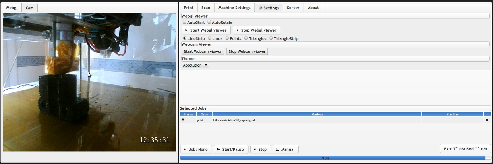
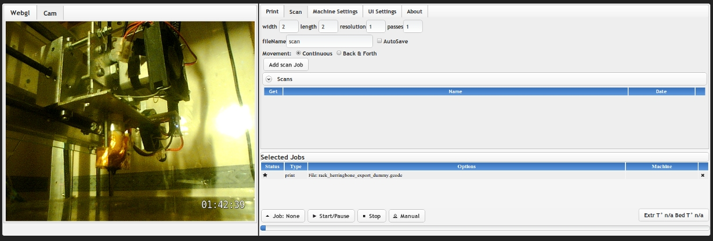

2011-04-10
Short Doboz-web news: v0.32 updates and additions

After some heavy bug fixing , feedback gathering and lots of testing, here is a short rundown on the current state of the project.
Added features and improvements :
Updates have been a little slow lately as i am rewriting a lot of elements from the server backend, also, upcoming exams, and building a mini reprap :)
In case you wonder why the project is at v0.32, v0.1 and v0.2 were the parent projects, that didn't get any release, as they were very machine-specific and limited:)
This v0.32 added a certain number of improvement, features and bugfixes :
Webcam view:
- after numerous suggestions on the Reprap dev list, i added some initial support for webcam view:
- It is using pyGst , a very nifty set of python bindings for gstreamer , which i had some expercience with using java, and that works great on windows and linux (tested on win xp sp3 and ubuntu 10.04)
- it is NOT a real "streaming" view : but a simple static image that gets refreshed regularly ( settable) at maximum speed , i managed to get about 15 fps : but such a speed will of course not be needed in most cases, and it allows for a lighter system, server side
Server side architecture:
- the server side code was refactored and rewritten in the first step towards a modular, extendable architecture
- easier configuration : you can now set the web server as well as enable webcam support through a simple configuration file
Client side changes:
- the interface was reworked and streamlined
- added additional settings for update refresh rates (for tasks, machine status fetching etc) to allow users to fine tune performance and reactivity of remote viewing operations
Planned features and improvements for 0.5 (first alpha):
Version v0.5 will be the first "major" version with most of the api stabilized , and at least basic versions of all planned features implemented.
A certain number of the features outlined below might already be present in future versions, but before 0.5
- Simplified installation and configuration
- Makerbot support
- Multiple machine support (for reprap/makerbot "farms"/fablabs)
- In the same vein as the above addition, multiple webcam view
- switch to a python Twisted based system for the server side
- switch to websockets /longpolling to greatly reduce server requirement and increase speed
- plugin based system for extending functionality in an easier way
Still looking for Feedback:
I am also still looking for feedback and people willing to give it a try , even in this early version, triffid/ triddis_hunter, has already helped point out a number of errors (via github) that have then been corrected :) For up to date instructions please refer to the wiki here : https://github.com/kaosat-dev/Doboz/wiki/Doboz-web (the wiki on Reprap.org gets updated with a slight delay)
Downloads:
{kind=link}
{kind=link}